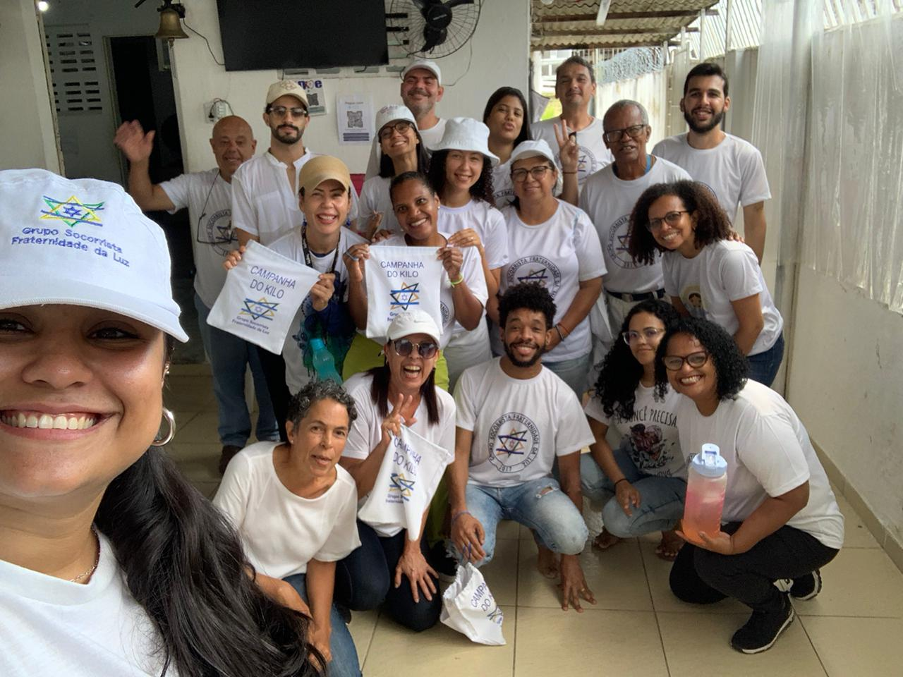

Nossas doações
Campanha do Quilo
Nossa casa realiza a Campanha do Quilo para ajudar a comunidade. Voluntários dedicados se organizam em grupos e saem às ruas para coletar alimentos não perecíveis de residências, comércios e pontos de coleta fixos. Esses alimentos são essenciais para apoiar famílias em situação de vulnerabilidade. A campanha é uma tradição que promove a solidariedade e o espírito comunitário, mobilizando pessoas de todas as idades para contribuir com um quilo de alimento.
Distribuição das Cestas Básicas
Os alimentos arrecadados são organizados em cestas básicas, que contêm itens essenciais como arroz, feijão, açúcar, farinha, óleo, etc. Essas cestas são distribuídas mensalmente para 110 famílias cadastradas, garantindo um apoio contínuo e vital para essas famílias. Além disso, a distribuição é feita de maneira organizada e respeitosa, assegurando que cada família receba o que precisa. A transparência é fundamental, e mantemos uma prestação de contas clara para informar aos doadores como os recursos estão sendo utilizados.
Campanha do Quilo
Nossa casa realiza a Campanha do Quilo para ajudar a comunidade. Voluntários dedicados se organizam em grupos e saem às ruas para coletar alimentos não perecíveis de residências, comércios e pontos de coleta fixos. Esses alimentos são essenciais para apoiar famílias em situação de vulnerabilidade. A campanha é uma tradição que promove a solidariedade e o espírito comunitário, mobilizando pessoas de todas as idades para contribuir com um quilo de alimento.